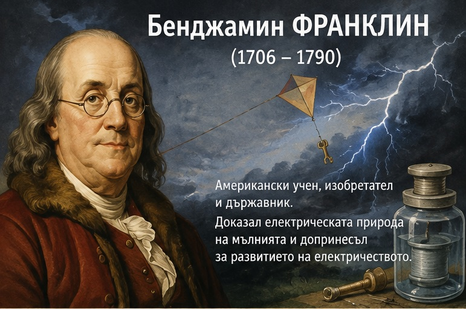
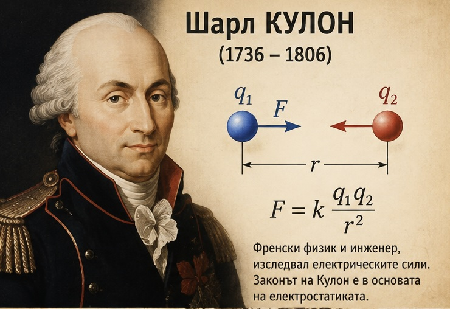
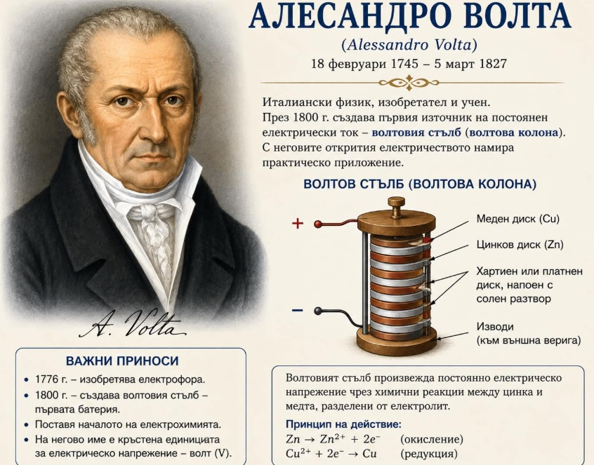
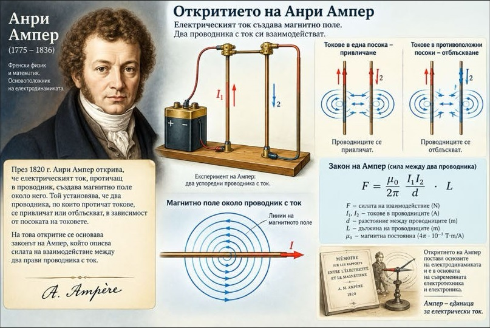
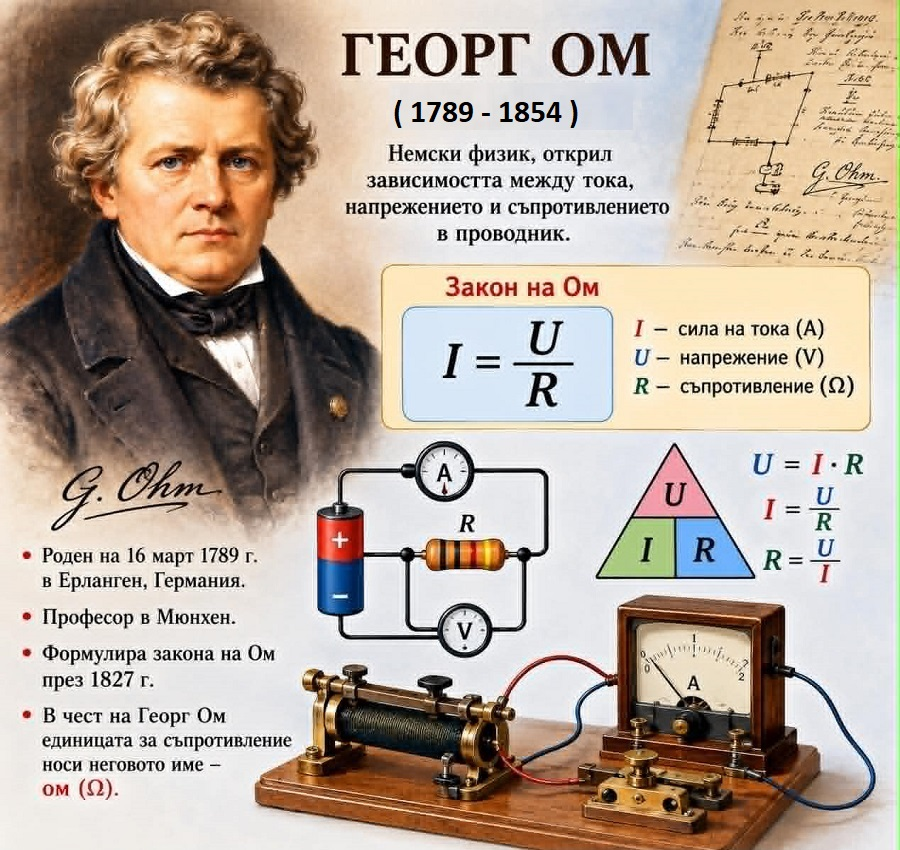
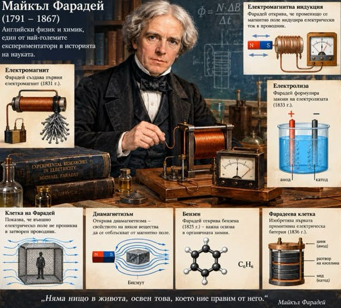
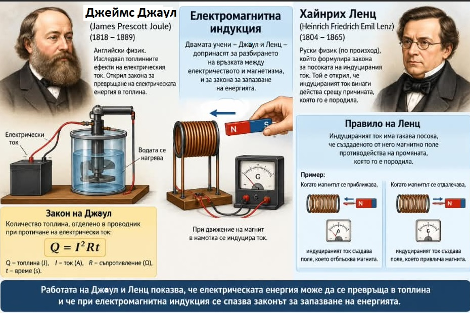
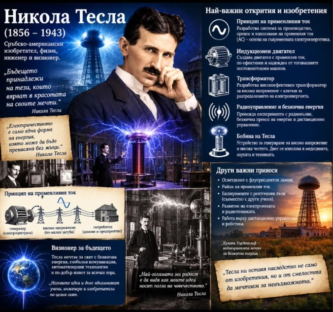

Бенджамин Франклин – човекът, който укроти мълнията

Бенджамин Франклин бил изключително любознателен човек – учен, изобретател, писател и политик. Той вярвал, че с труд, знания и постоянство човек може да постигне големи успехи.
Като млад работил като печатар, а по-късно създал собствена печатница, книжарница и обществена библиотека. Но най-много го привличала науката.
Франклин провеждал смели експерименти с електричеството и доказал, че мълнията е електрическо явление. Неговите изследвания помогнали за създаването на гръмоотвода, който предпазва сградите от удар на мълния.
Освен учен, Франклин бил и един от основателите на Съединените американски щати. Той участвал в борбата за независимостта на страната и помогнал за спечелването на подкрепата на Франция.
Бенджамин Франклин оставил след себе си не само научни открития, но и ценни житейски съвети. Той вярвал в трудолюбието, честността, умереността и разумното използване на времето. Животът му доказва, че любопитството и упоритостта могат да променят света.
Шарл Кулон – откривателят на силата между електрическите заряди

Шарл дьо Кулон е френски физик, който помогнал на хората да разберат тайнствените сили между електрическите заряди. Още като млад той се увлякъл по математиката и науката, а по-късно работил като военен инженер.
Кулон изследвал електричеството, магнетизма и триенето. С помощта на специални измервания той установил как силата между електрическите заряди зависи от големината им и разстоянието между тях. Така открил важен физичен закон, известен днес като закон на Кулон.
За своите научни постижения той станал член на Парижката академия на науките. В негова чест единицата за измерване на електричния заряд е наречена кулон (C). Името му е изписано и на Айфеловата кула сред имената на великите френски учени.
Интересен факт:
Благодарение на изследванията на Кулон днес можем по-точно да обясним защо едноименните електрически заряди се отблъскват, а разноименните се привличат.
.
⚡ Алесандро Волта – човекът, който създаде първата електрическа батерия

Алесандро Волта е италиански физик и химик, роден през 1745 г. в град Комо, Италия. Още като млад той проявява голям интерес към природните явления и избира да посвети живота си на науката.
Волта провежда множество опити с електричеството и газовете. През 1775 г. създава електрофор – уред за получаване на статично електричество, а по-късно открива газа метан.
Най-голямото му постижение е създаването на първата електрическа батерия около 1800 г., наречена волтов стълб.
Тя е изградена от редуващи се медни и цинкови дискове и може да произвежда постоянен електрически ток. Това откритие поставя основите на развитието на съвременните батерии.За големия си принос към науката Волта получава признание от Наполеон Бонапарт, който през 1810 г. му дава титлата граф. В негова чест по-късно единицата за електрическо напрежение е наречена волт (V).
Алесандро Волта остава в историята като един от учените, помогнали на човечеството да овладее електричеството и да го превърне в незаменима част от ежедневието ни.
Андре Ампер – ученият, който допринася за развитието на електротехниката

Андре-Мари Ампер бил изключително любознателен френски физик и математик, роден през 1775 г. в град Лион, Франция. Още от малък обичал книгите и науката. На 14-годишна възраст прочел огромна енциклопедия, която събудила у него още по-голяма жажда за знания.
Ампер проявявал интерес към различни науки, но най-големите му открития били свързани с електричеството и магнетизма.
През 1820 г. той започнал да изследва как електрическият ток взаимодейства с магнитното поле и открил важни закономерности, които поставили основите на науката за електромагнетизма.
Неговите идеи допринесли за развитието на електротехниката и съвременните електрически устройства. В знак на признание за неговия принос единицата за измерване на силата на електрическия ток била наречена ампер (A).
Андре Ампер остава в историята като блестящ учен, чието любопитство и стремеж към знания помогнали да разберем по-добре света на електричеството и магнетизма.
.
Ханс Кристиан Оерстед – ученият, който свърза електричеството и магнетизма

Ханс Кристиан Оерстед бил датски физик, чиято любознателност довела до едно от най-важните открития във физиката.
Още от млад проявявал интерес към науката и много от знанията си придобил чрез самообучение. По-късно станал професор в Копенхагенския университет, където изследвал електричеството и други физични явления.
През 1820 г., докато подготвял демонстрация за своите студенти, Оерстед забелязал нещо изненадващо. Когато през проводник протичал електрически ток, стрелката на близкия компас се отклонявала от север. Той повторил опита и установил, че електрическият ток създава магнитно поле!
Това откритие доказало връзката между електричеството и магнетизма и поставило основите на електромагнетизма. То помогнало на други учени да разработят технологии, използвани в електродвигателите и много съвременни устройства.
Ханс Кристиан Оерстед остава в историята като ученият, който открил невидимата връзка между електричеството и магнетизма.
.
Георг Ом – физикът, който разкрива тайните на електрическия ток

Георг Симон Ом е германски физик, чието откритие помага на хората да разберат как се движи електрическият ток.
Роден през 1789 г. в Германия, Ом проявява голям интерес към науката. С помощта на саморъчно изработени уреди той започва да изследва електричеството и връзката между тока, напрежението и съпротивлението.
През 1827 г. ученият публикува своята теория, известна днес като Закон на Ом. Тя показва как напрежението и съпротивлението определят силата на електрическия ток. Откритието му става основа за разбирането и изчисляването на електрическите вериги.
В знак на признание за неговия принос единицата за електрическо съпротивление е наречена ом (Ω).
Интересен факт:
Благодарение на Георг Ом днес можем да изчисляваме какъв ток протича през електрическите уреди и какво съпротивление оказват техните елементи.
Майкъл Фарадей – човекът, който превърна магнетизма в електричество

Майкъл Фарадей е изключителен британски физик и химик, който доказва, че големите открития не зависят само от образованието, а и от любопитството, упоритостта и любовта към науката.
Той е роден през 1791 г. в бедно семейство и няма възможност да получи добро образование. Още като дете започва работа, а на 14 години става книговезец. Именно книгите събуждат интереса му към науката. С голямо желание той посещава научни лекции и постепенно превръща мечтата си в реалност.
Фарадей става един от най-великите експериментатори в историята.
Той открива електромагнитната индукция, създава първия примитивен електродвигател и поставя основите на съвременната електротехника.
Неговите открития помагат за създаването на електрогенераторите и електродвигателите, които днес са част от нашето ежедневие.
Въпреки че не владее висшата математика, Фарадей притежава изключителен усет към природните явления.
Той умее да обяснява сложните научни идеи по разбираем начин. Неговите изследвания вдъхновяват другия велик учен Джеймс Кларк Максуел, който по-късно ги описва с математически уравнения.
Любопитен факт:
В знак на признание за неговия принос единицата за електричен капацитет е наречена фарад. Алберт Айнщайн дори държал портрет на Фарадей в кабинета си редом с тези на Нютон и Максуел.
Майкъл Фарадей остава пример за това как любознателността и постоянството могат да променят света, дори когато човек започва пътя си без образование и без средства.
Джеймс Джаул и Хайнрих Ленц - учените който разкриха тайната на енергията

Джеймс Прескът Джаул
Английски физик, който още от млад проявявал голям интерес към науката. Макар да не работел като учен в университет, той провеждал любопитни опити и търсел начини да използва енергията по-ефективно.
Джаул открил, че електрическият ток може да нагрява проводниците и изследвал как механичната енергия се превръща в топлина.
С упоритите си експерименти той помогнал да се докаже, че различните видове енергия могат да се преобразуват един в друг.
В негова чест единицата за измерване на енергията е наречена джаул (J). Така името му остава завинаги свързано с едно от най-важните понятия във физиката – енергията!
Хайнрих Фридрих Емил Ленц
е руски физик от немски произход, посветил живота си на изучаването на електричеството и магнетизма.Роден в град Тарту през 1804 г., Ленц проявява голям интерес към природата и науката.
През 1823 г. той се отправя на околосветско пътешествие, по време на което изследва морската вода, климата и земния магнетизъм.
Най-голямата му слава идва от откритията в областта на електромагнетизма.
През 1834 г. той формулира правилото на Ленц, което обяснява посоката на индуцирания електричен ток.
То показва, че природата се „съпротивлява“ на промяната, която го предизвиква.
По-късно Ленц изследва и превръщането на електрическата енергия в топлина — явление, известно като ефект на Джаул–Ленц.Благодарение на своята любознателност и упоритост Хайнрих Ленц оставя трайна следа във физиката и помага за разбирането на принципите, върху които работят много съвременни електрически устройства.
През 1841 година е открита зависимостта между количеството топлина, отделяно от проводник, по който тече ток, големината на тока и съпротивлението на проводника (закон на Джаул-Ленц).
През 1843 г. пресмята пръв механичния еквивалент на топлината и стига до закона за запазване на енергията.
⚡ Никола Тесла– геният, който улови мълниите на бъдещето

През есента на 1884 г. младият и безпаричен Никола Тесла стъпва на пристанището в Ню Йорк. Единственото богатство, което носи в джоба си, е препоръчително писмо от бившия си шеф в Европа до великия изобретател Томас Едисън. Писмото гласи: „Познавам двама велики мъже в този свят. Единият сте Вие, а другият е този млад човек.“
Едисън наема Тесла веднага, но двамата са като огън и вода. Едисън е практичен бизнесмен, който вярва в постоянните опити и грешки. Тесла е визуален гений – той може да конструира, сглоби и тества сложни машини изцяло в ума си, преди изобщо да ги скицира на хартия.
Големият сблъсък настъпва, когато Едисън обещава на Тесла фантастичната сума от 50 000 долара (равностойни на над 1,5 милиона днес), ако успее да подобри неговите неефективни генератори за постоянен ток. Тесла работи денонощно в продължение на месеци и постига огромен успех.
Когато обаче отива да поиска обещаната награда, Едисън просто се изсмива и му казва: „Тесла, Вие не разбирате нашия американски хумор.“
Огорчен и останал без пукната стотинка, Тесла напуска незабавно. За да оцелее, великият ум е принуден да копае канали за 2 долара на ден. Но точно в тази кал той намира мотивация за своето отмъщение. Малко след това Тесла патентова своята система за променлив ток – по-евтина, по-безопасна и способна да пренася електричество на огромни разстояния. Това поставя началото на легендарната „Война на токовете“